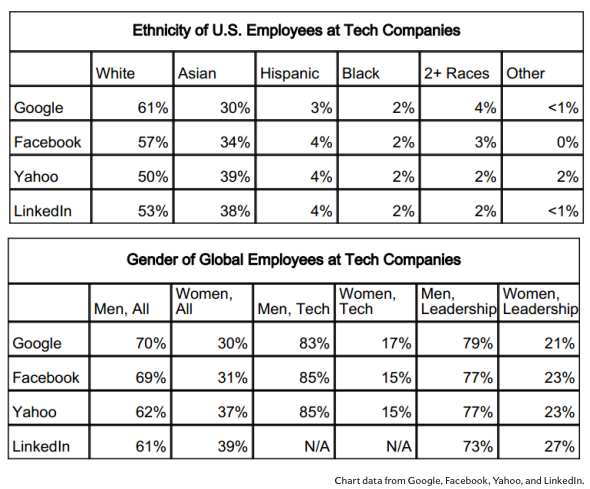

Minorites in tech
...or rather, a lack of them. That's the topic I'll be addressing for week 4 of Dev Bootcamp.
If you look at the tech crowd as a whole, you will find a largely homogeneous looking group: Young, white males.
And if you think I'm exaggertating go look at Google Admitting It Hires Too Many White Dudes. And Google isn't the only one. Twitter, Facebook, LinkedIn, and many other tech companies mirror these demographics.

We see the same lack of diversity in tech workers as we do in tech entrepreneurship and tech leadership. Only 4% of tech-based enterprises are minority-owned.
This lack of diversity is problem on many levels: on the scope of products produced; on the economic disparities created around technology-centered areas (rent for a 2 bedroom apartment in SF is now ~$4000/month, largely due to tech workers); on the culture of privilige it creates; and on the education and employment gaps it continues to widen.
Tech is here to create smart ways to solve problems. And I love that. Never in history have we had so much access to knowledge, and we owe that to the tech industry. However, there is a plethora of social problems we are not trying to address with tech because the problems are not familiar to many working in the tech industry.
If you've never experience real hunger, you might not be thinking about using technology to find and easier way to distribute food in poor neighborhoods.
If you didn't attend an underfunded public school, you're probably not concerned with using tech to reform the public education system so that quality education is accessible to all.
Having a diverse workforce is important because each person applies their experiences to solving problems. Rich white men will focus on solving problems rich white men deal with. I am not trying to say that their problems are not real. I am simply saying it would be nice if we could use all our modern day tech advances to solve a wider scope of problems. If we have a tech workforce that more silimarly reflects the demographics of the American population at large, maybe we can start using tech to address more issues facing the American population at large.